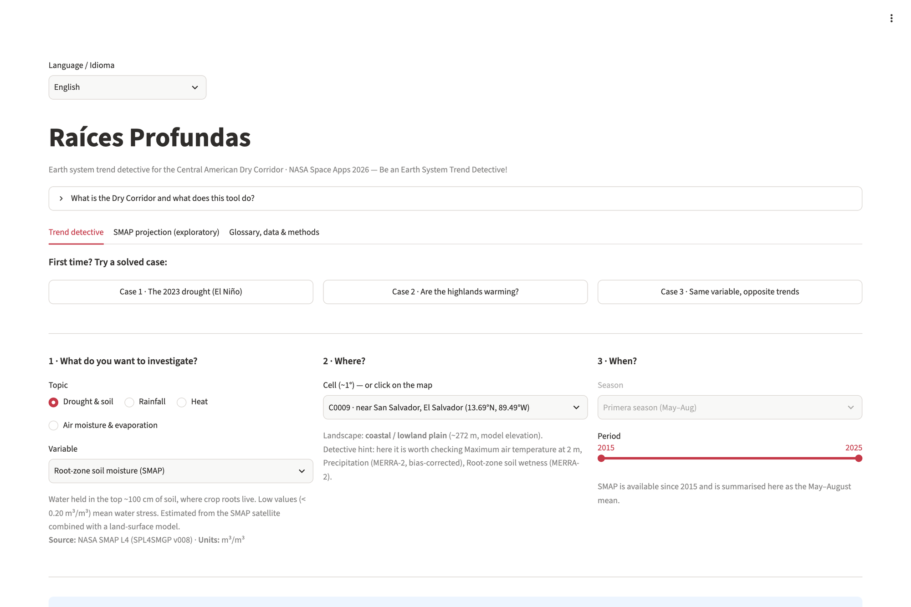
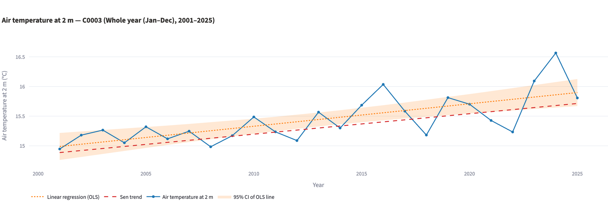
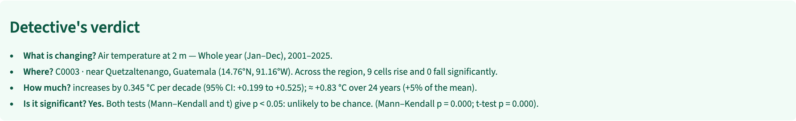
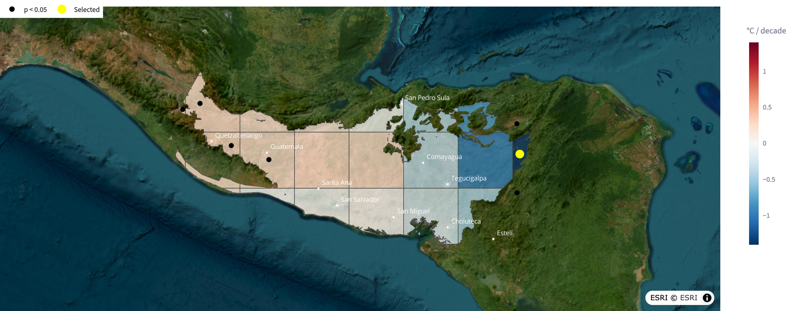
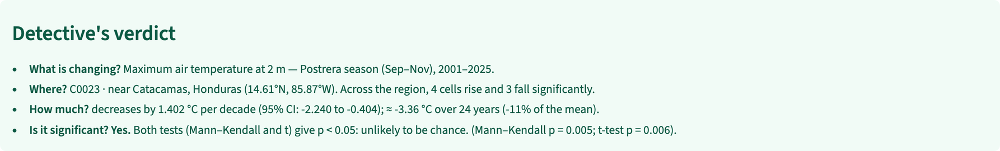

Team: Ad Astra – Programming, Data Spatial & Planet Investigation
Member: Cristian Moises Parada Mendoza — Team Lead
Challenge: Be An Earth System Trend Detective!
Live app: raices-del-corredor.onrender.com · Code: github.com/w2k31984/dry-corridor-roots-earth
Our goal: let students, farmers' advisors and local decision-makers answer, in minutes and without code:





NASA data
Statistics
PythonStreamlitPlotlySciPyGeoPandas
Try it: raices-del-corredor.onrender.com